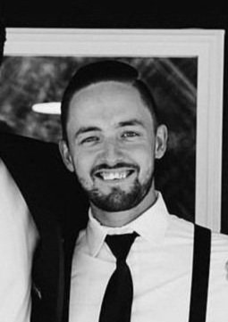

Brandon Hauck: Implementation Specialist. Brandon's key role in the project will be to implement the systems CAN protocol and network configuration. Brandon is in charge of functionality testing, I/O's, and all hardware/mechanical related aspects. He will work alongside Isai to provide front end and back end support when needed.
Week1
Setup team and Github repo with Isai for Project VI
Week2
Confirmed Communication between client and server
Confirmed functionality of elevator system by sending multiple floor commands
Created communication test plan document
Created initial concept for GUI design
Configured Raspberry-Pi to pull directly from project repository
Setup Raspberry Pi as server
Created basic project web pages and linked project plan on GitHub
Updated project status report on GitHub repository
Week3
Completed wiring diagram with illustrations for connections on all 4 elevator nodes
Configured CAN messaging protocol with filters on STM32
Created a test plan to confirm software and hardware functionality of elevator call system
Wired the STM32 boards with push buttons and LEDs for each elevator node
Tested and confirmed functionality of elevator system with newly integrated pushbuttons and LEDs
Updated web server with basic styling in CSS
Week4
Corrected Elevator Push Button LED Wiring For Complete Functionality
Corrected Software Logic For Floor LED Illumination
Flashed all STM32 boards in elevator network with updated software
Verified and Validated all LED illumination behaves as intended
Week5
Completed all test plan documentation for Phase 1 of project
Created initial technical document for finite state machine
Updated all technical documents and added relevant Phase 1 files onto github repo
Week6
Conceptualized and completed a technical document describing our projects additional feature
Assisted Isai with updating HTML documents for project implementation